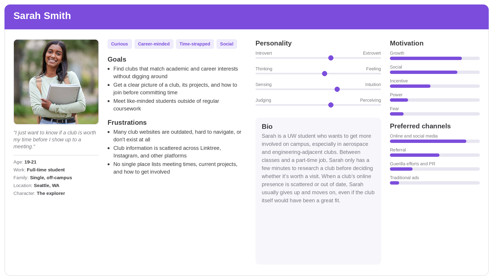
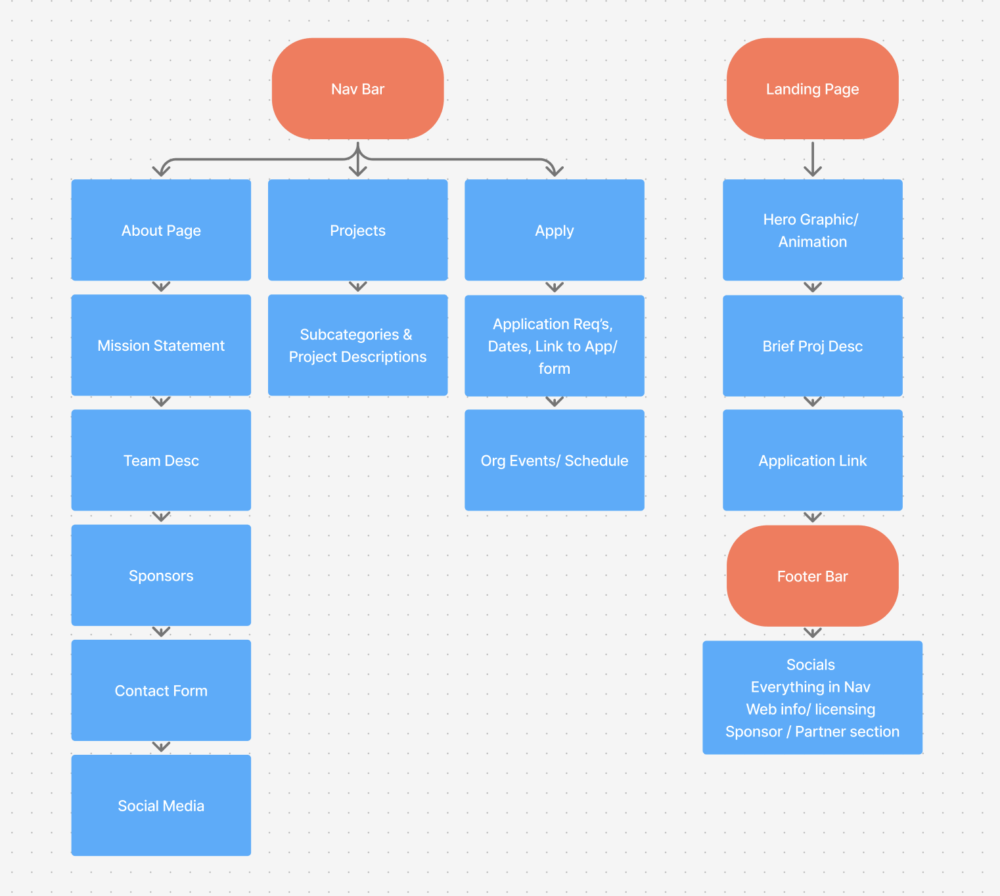
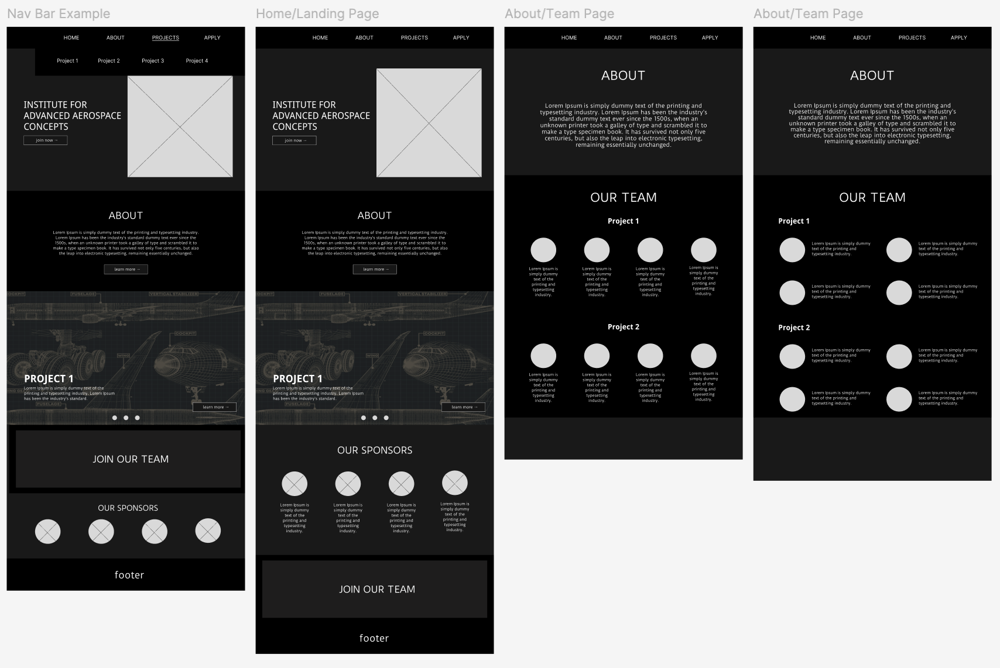
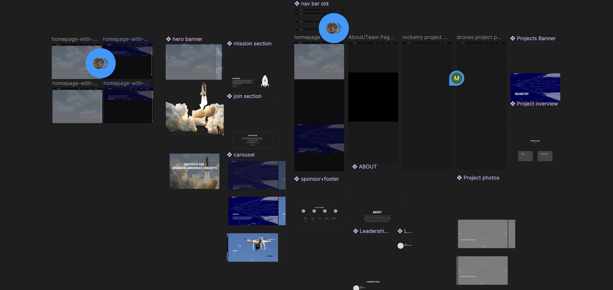
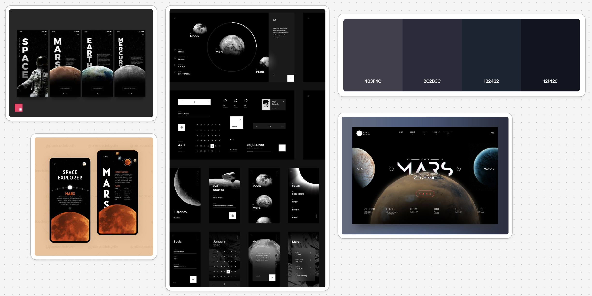
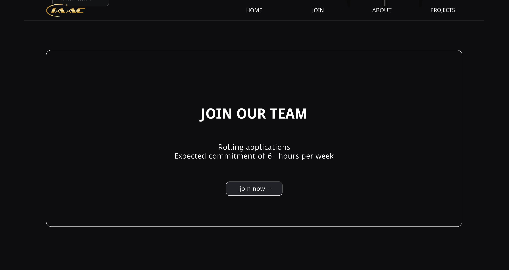
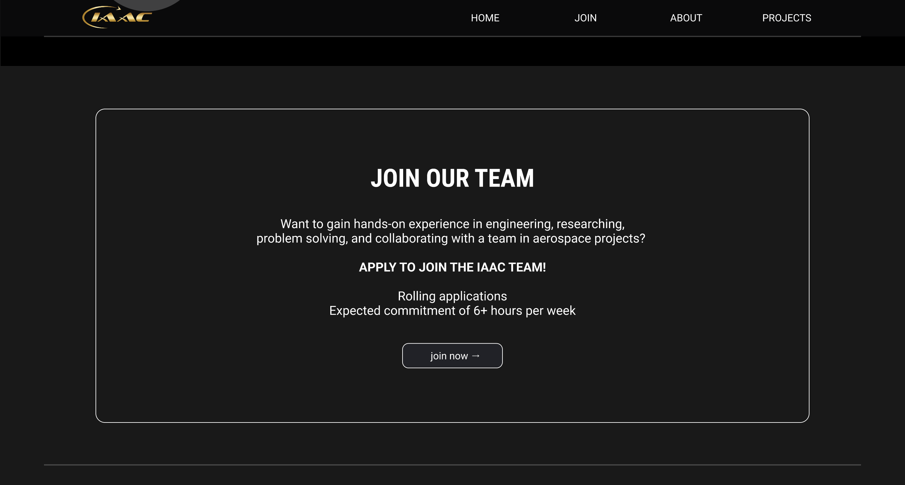
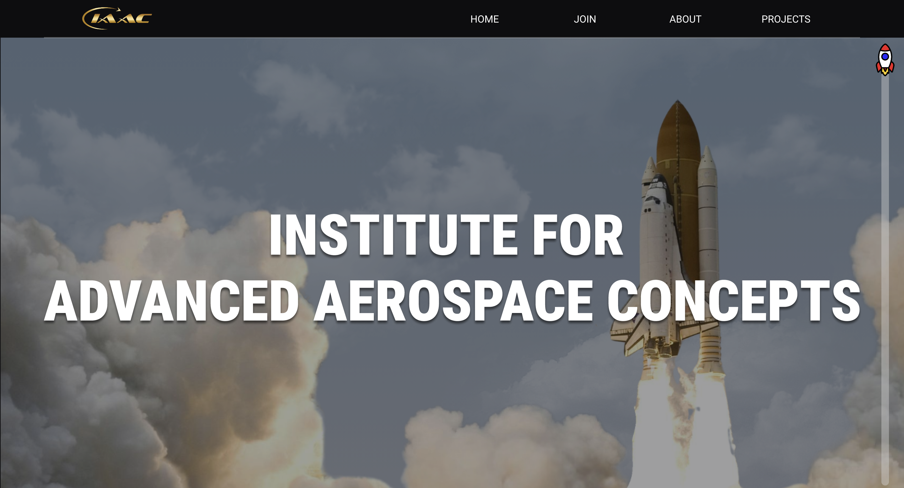
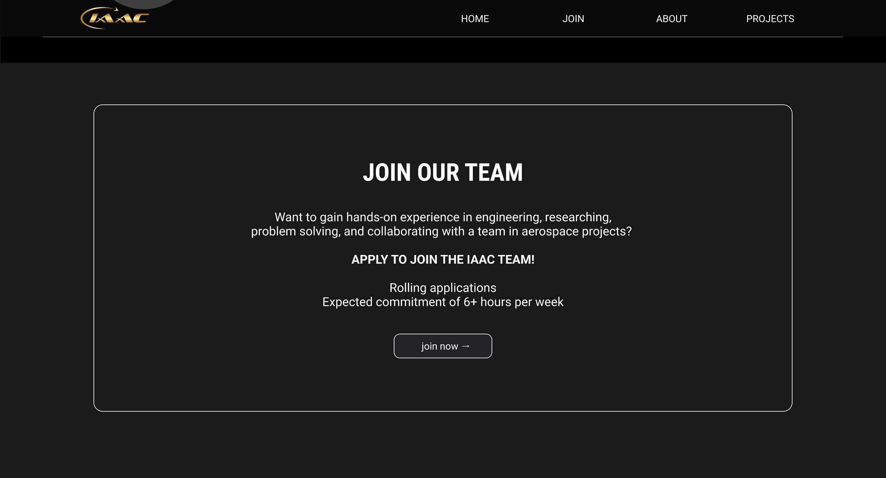

//Website
IAAC
Designing an interactive recruitment website for a university aerospace club to boost visibility and membership.
Project Overview
As part of my semester project at Web Impact UW, I designed an interactive website for a university club: the Institute of Advanced Aerospace Concepts. This website aims to advertise the club and provide information to students at UW, inviting them to join.
Problem
The Institute for Advanced Aerospace Concepts lacks a well-built website to store club information and attract students to join their team.
Solution
The newly built website allows the Institute for Advanced Aerospace Concepts to recruit students, advertise their club, and post updates on their newest projects.
Empathize
User Interviews
My team interviewed 3 University of Washington students who are interested in discovering and joining new clubs at school.
Define
User Persona
Sarah is a UW student eager to join aerospace and engineering clubs, but with a full course load and part-time job, she has little time to research beforehand. She wants to quickly find clubs that fit her interests and see what she's signing up for. Her biggest frustration is outdated club websites and information scattered across Instagram, Linktree, and other platforms with no reliable source. She needs one centralized, up to date site that lets her evaluate a club at a glance.

POV Statement
Sarah, a busy UW student looking to get involved on campus, needs a fast and reliable way to find complete, up to date information about a club's activities and how to join.
How Might We Questions
- How might we make it easier for clubs to keep their information current without added effort?
- How might we consolidate scattered club information into one reliable, centralized place?
Ideate
User Flows
The user flow maps two paths: site navigation and the landing page. Navigation branches from the nav bar into About, Projects, and Apply, with About going deepest (mission, team, sponsors, contact) and Apply keeping all application steps together in one continuous path. The landing page offers a shortcut, going straight from hero graphic to project description to application link. Mapping this clarified how deep each section should be, kept application steps unified, and separated secondary info like socials and sponsors into the footer.

Wireframes
My low-fi wireframes laid out the nav bar, landing page, and About/Team page, establishing the site's core structure before adding visual polish. I focused on solving the problems from my research: consolidating scattered information (about, projects, sponsors, and join links all live on one page), and clarifying navigation so students can find what they need quickly. The About page nests project details under team sections, testing whether grouping by project made club information easier to scan than a flat list.

Prototype
High-Fidelity Screens
The high-fi screens replaced placeholder blocks with real photography, a launch hero image and blueprint-style project banners that reflect the club's aerospace focus. The dark theme and typography give it a more technical, professional feel matching the subject matter. Structurally, the wireframe's grouped sections became modular components (hero, mission, carousel, sponsor and footer), and each project type (rocketry, drones) got its own dedicated page rather than sharing one generic template, making the site easier to expand as the club adds projects.

Style Guide
The style guide uses a dark, moody palette (403F4C, 2C2B3C, 1B2432, 121420) to evoke space, with bold condensed sans-serif type and minimal UI chrome. Circular data readouts and blueprint graphics reinforce a precise, instrument-panel aesthetic fitting for an aerospace club.

Test
Usability Testing
I tested the site with 2 participants, both UW students interested in learning more about campus clubs. Each was asked to complete two tasks: browse the site to learn what the club does, and locate information on how to join. The goal was to observe how easily participants could navigate the site and find the information they needed, while also gathering feedback on the overall look, feel, and functionality.
Overall, participants found the website easy to navigate, with a clean, easy to read visual design. The one area they flagged for improvement was the "Join Our Team" section on the homepage. They felt its messaging could be warmer and more inviting, with a tone that better encourages students to actually want to get involved.


Based on this feedback, my team revised the "Join Our Team" section to include a more inviting message: "Want to gain hands-on experience in engineering, research, problem-solving, and collaborating with a team in aerospace projects? Apply to join the IAAC team!" With this change, we hope to give the section a warmer, more welcoming tone that speaks directly to what interested students could gain, rather than simply telling them to apply.
Final Product


View prototype →Conclusion
Key Takeaways
- Main insights. Talking to students who actively search for clubs revealed that the real problem isn't lack of interest, it's fragmentation. Information about clubs lives scattered across Instagram, Linktree, and word of mouth, which makes even active clubs feel unofficial or hard to trust. It made me realize a club's credibility often comes down to whether it looks put together online, not just what the club actually does.
- What I've learned from this project. I enjoyed seeing how something as simple as centralizing scattered information could make a lesser known club feel more legitimate to a student who has never heard of it. Working through research, branding, and prototyping together taught me that a website's structure can be more persuasive than its content; if students can't quickly find what they're looking for, they won't stick around long enough to be convinced to join.